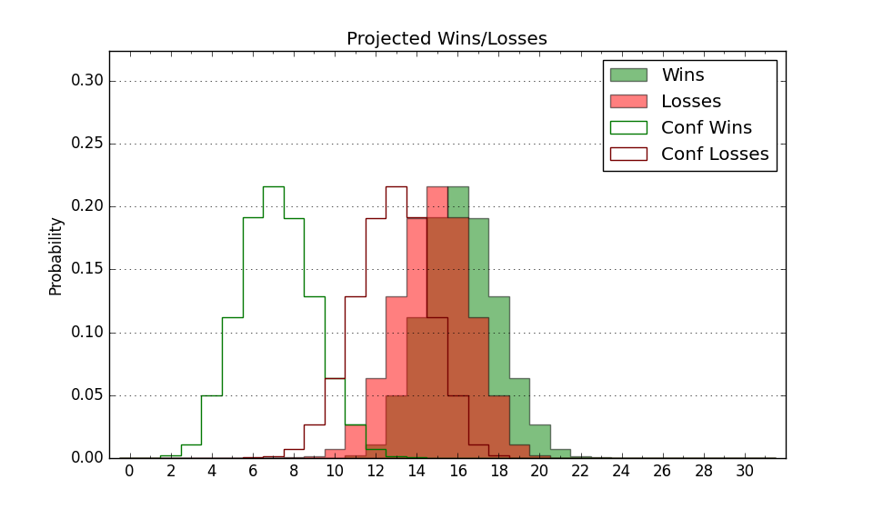

| Home | Game Probabilities | Conferences | Preseason Predictions | Odds Charts | NCAA Tournament |
| City: | Orlando, Florida | |
| Conference: | Big 12 (7th)
| |
| Record: | 2-2 (Conf) 11-4 (Overall) | |
| Ratings: | Comp.: 8.9 (89th) Net: 8.2 (93rd) Off: 109.4 (110th) Def: 101.1 (102nd) SoR: 60.0 (40th) |
| Remaining | ||||||
|---|---|---|---|---|---|---|
| Date | Opponent | Win Prob | Pred. | |||
| 1/14 | @ Arizona St. (56) | 21.4% | L 68-77 | |||
| 1/18 | Houston (3) | 8.9% | L 59-74 | |||
| 1/21 | @ Iowa St. (7) | 5.2% | L 65-87 | |||
| 1/25 | TCU (71) | 54.8% | W 71-70 | |||
| 1/28 | @ Kansas (8) | 5.3% | L 63-84 | |||
| 2/1 | BYU (39) | 38.3% | L 75-78 | |||
| 2/5 | Cincinnati (29) | 31.5% | L 66-71 | |||
| 2/8 | @ Baylor (12) | 7.1% | L 67-85 | |||
| 2/11 | Iowa St. (7) | 15.7% | L 70-82 | |||
| 2/15 | @ Colorado (86) | 34.4% | L 71-76 | |||
| 2/19 | @ Oklahoma St. (119) | 46.7% | L 75-76 | |||
| 2/23 | Utah (72) | 56.3% | W 79-77 | |||
| 2/26 | Kansas St. (104) | 71.3% | W 79-73 | |||
| 3/1 | @ TCU (71) | 26.3% | L 67-74 | |||
| 3/5 | Oklahoma St. (119) | 74.9% | W 79-71 | |||
| 3/8 | @ West Virginia (38) | 15.2% | L 65-77 | |||
| Previous | Game Score | |||||
| Date | Opponent | Win Prob | Result | Off | Def | Net |
| 11/4 | Texas A&M (21) | 26.0% | W 64-61 | -5.2 | 15.4 | 10.2 |
| 11/8 | Fort Wayne (136) | 77.3% | W 75-68 | -11.5 | 8.8 | -2.8 |
| 11/12 | Florida Atlantic (96) | 67.8% | W 100-94 | 13.8 | -11.4 | 2.5 |
| 11/19 | Tennessee Tech (270) | 92.5% | W 80-69 | -4.7 | -13.9 | -18.7 |
| 11/22 | (N) Wisconsin (26) | 18.9% | L 70-86 | -10.6 | 5.7 | -4.9 |
| 11/24 | (N) LSU (62) | 35.9% | L 102-109 | 3.2 | -0.4 | 2.8 |
| 11/27 | Milwaukee (152) | 80.6% | W 84-76 | 2.2 | -10.0 | -7.8 |
| 12/1 | California Baptist (164) | 82.1% | W 74-59 | -7.1 | 15.2 | 8.1 |
| 12/8 | Tarleton St. (297) | 94.0% | W 66-51 | -7.9 | 6.4 | -1.5 |
| 12/14 | (N) Tulsa (292) | 89.1% | W 88-75 | 10.7 | -15.3 | -4.6 |
| 12/21 | Jacksonville (176) | 83.9% | W 86-66 | 13.2 | 2.5 | 15.7 |
| 12/31 | @Texas Tech (17) | 8.4% | W 87-83 | 22.3 | 16.4 | 38.7 |
| 1/5 | Kansas (8) | 16.1% | L 48-99 | -31.5 | -21.4 | -53.0 |
| 1/8 | Colorado (86) | 64.1% | W 75-74 | 0.1 | -4.2 | -4.1 |
| 1/11 | @Arizona (11) | 6.8% | L 80-88 | 14.3 | 3.4 | 17.7 |
| Stats & Trends | |||||
|---|---|---|---|---|---|
| Current | Day | Week | Month | Season | |
| Composite | 8.9 | -0.1 | +1.3 | +1.1 | -4.3 |
| Comp Rank | 89 | -2 | +11 | +7 | -29 |
| Net Efficiency | 8.2 | -0.1 | +1.8 | +2.8 | -- |
| Net Rank | 93 | -2 | +17 | +22 | -- |
| Off Efficiency | 109.4 | -0.1 | +2.0 | +5.3 | -- |
| Off Rank | 110 | -3 | +33 | +70 | -- |
| Def Efficiency | 101.1 | -0.0 | -0.2 | -2.5 | -- |
| Def Rank | 102 | -- | +5 | -20 | -- |
| SoS Rank | 69 | -2 | +36 | +91 | -- |
| Exp. Wins | 16.2 | -0.0 | +0.6 | +1.6 | +0.1 |
| Exp. Conf Wins | 7.2 | -0.0 | +0.6 | +1.3 | -0.7 |
| Conf Champ Prob | 0.0 | -- | -- | -0.0 | -0.2 |

| Advanced Stats | ||
|---|---|---|
| Stat | Value | Rank |
| Off Eff FG % | 0.504 | 181 |
| Off Ast Ratio | 0.158 | 104 |
| Off ORB% | 0.323 | 85 |
| Off TO Rate | 0.137 | 88 |
| Off FT Ratio | 0.429 | 25 |
| Def Eff FG % | 0.484 | 106 |
| Def Ast Ratio | 0.137 | 107 |
| Def ORB% | 0.297 | 217 |
| Def TO Rate | 0.168 | 75 |
| Def FT Ratio | 0.291 | 93 |